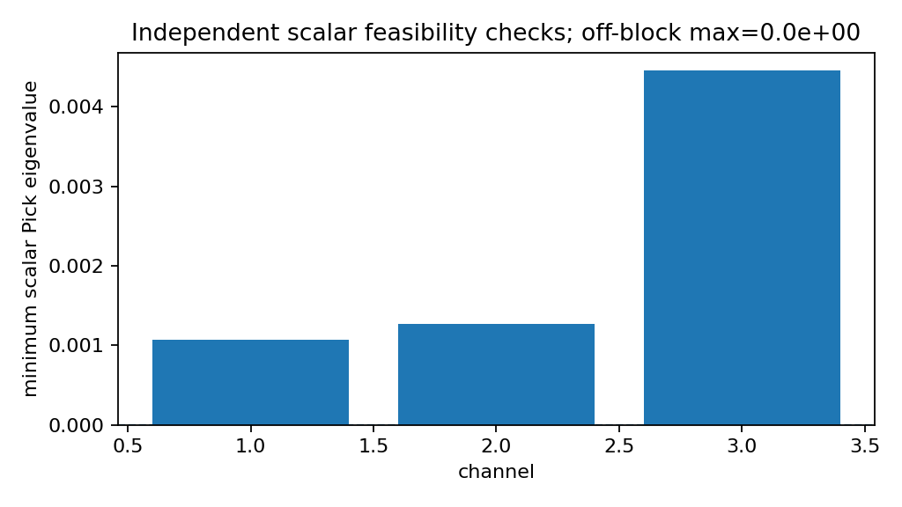
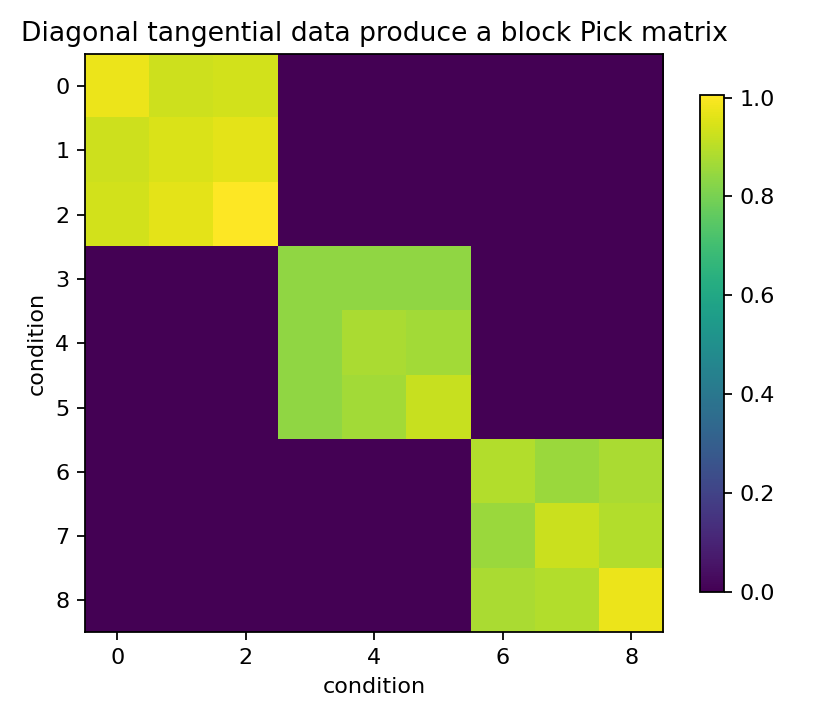

Diagonal tangential Schur equals independent scalar Pick problems¶
Tutorial goal
Show that diagonal MIMO tangential data decompose into independent scalar Schur/Pick checks.
Note
New to the terminology? See the lattice DSP concept map and the causality/data-use guide for how online, offline, block, and MIMO examples should be read.
Context¶
This tutorial mirrors the diagonal-MIMO-equals-SISO runtime check in the interpolation setting. If tangential directions are coordinate vectors and the Schur function is diagonal, the MIMO Pick matrix splits into independent scalar Pick blocks. This gives a simple sanity check for the matrix-valued tangential machinery.
Key idea and equations¶
For a diagonal matrix Schur function
coordinate tangential data satisfy
If the data are grouped by channel, the full Pick matrix is block diagonal, and each block is the scalar Pick matrix for one \(s_k\).
Causality and data use¶
This is an offline interpolation diagnostic. It does not filter a time stream; it checks that the MIMO Schur/Pick machinery reduces to independent scalar problems when there is no channel coupling.
What this example verifies¶
This verifies the reduction-to-scalar sanity check for interpolation data. When tangential directions are coordinate vectors and the Schur function is diagonal, the full MIMO Pick matrix should split into independent scalar Pick blocks with roundoff-level off-block error.
How to read the result¶
The full MIMO Pick matrix should match the scalar block-diagonal Pick matrix up to roundoff, and the diagonal constant solution should interpolate exactly.
Run command¶
python examples/diagonal_tangential_schur_equals_scalar.py
Run status¶
Return code: 0
Captured stdout¶
channels: 3
points per channel: 3
total tangential conditions: 9
diagonal Schur max singular value: 0.403113
full Pick min eigenvalue: 1.071818e-03
max |full Pick - scalar block diagonal Pick|: 0.000e+00
constant diagonal interpolation residual: 0.000e+00
scalar channel min eigenvalues: [0.001072 0.001265 0.00446 ]
interpretation: diagonal MIMO tangential data decompose into independent scalar Schur/Pick problems
Figures¶
{kind=link}

diagonal_scalar_pick_min_eigenvalues.png¶
{kind=link}

diagonal_tangential_pick_matrix.png¶
Source code¶
1"""Diagonal tangential Schur data reduce to independent scalar Pick tests."""
2
3from __future__ import annotations
4
5import os
6from pathlib import Path
7
8import numpy as np
9
10import lattice_dsp as ld
11
12
13def _artifact_dir() -> Path:
14 path = Path(os.environ.get("LATTICE_DSP_ARTIFACT_DIR", "reports/example-artifacts"))
15 path.mkdir(parents=True, exist_ok=True)
16 return path
17
18
19def _save_figures(full_pick: np.ndarray, block_error: float, channel_min_eigs: list[float]) -> None:
20 try:
21 import matplotlib.pyplot as plt
22 except ImportError: # pragma: no cover - optional plotting dependency
23 print("matplotlib is not installed; skipped figures")
24 return
25
26 out_dir = _artifact_dir()
27
28 fig, ax = plt.subplots(figsize=(5.2, 4.5))
29 im = ax.imshow(np.abs(full_pick))
30 ax.set_xlabel("condition")
31 ax.set_ylabel("condition")
32 ax.set_title("Diagonal tangential data produce a block Pick matrix")
33 fig.colorbar(im, ax=ax, shrink=0.82)
34 fig.tight_layout()
35 fig.savefig(out_dir / "diagonal_tangential_pick_matrix.png", dpi=160)
36 plt.close(fig)
37
38 fig, ax = plt.subplots(figsize=(6.4, 3.6))
39 ax.bar(np.arange(1, len(channel_min_eigs) + 1), channel_min_eigs)
40 ax.axhline(0.0, linestyle="--", linewidth=1.0)
41 ax.set_xlabel("channel")
42 ax.set_ylabel("minimum scalar Pick eigenvalue")
43 ax.set_title(f"Independent scalar feasibility checks; off-block max={block_error:.1e}")
44 fig.tight_layout()
45 fig.savefig(out_dir / "diagonal_scalar_pick_min_eigenvalues.png", dpi=160)
46 plt.close(fig)
47
48
49channels = 3
50points_per_channel = 3
51gains = np.array([0.25, -0.40 + 0.05j, 0.35j], dtype=np.complex128)
52points_by_channel = [
53 np.array([-0.20, 0.05 + 0.10j, 0.26j]),
54 np.array([0.00, 0.18 - 0.12j, -0.30j]),
55 np.array([0.12, -0.22 + 0.05j, 0.32j]),
56]
57
58points: list[complex] = []
59directions: list[np.ndarray] = []
60values: list[np.ndarray] = []
61for channel in range(channels):
62 basis = np.eye(channels, dtype=np.complex128)[channel]
63 for z in points_by_channel[channel]:
64 points.append(complex(z))
65 directions.append(basis.copy())
66 values.append(gains[channel] * basis)
67
68full_data = ld.RightTangentialSchurData(np.array(points), np.array(directions), np.array(values))
69full_pick = ld.right_tangential_pick_matrix(full_data)
70
71# Since the conditions are ordered by channel and directions are coordinate
72# vectors, the full Pick matrix should be block diagonal with scalar Pick blocks.
73channel_min_eigs: list[float] = []
74block_diag = np.zeros_like(full_pick)
75for channel in range(channels):
76 sl = slice(channel * points_per_channel, (channel + 1) * points_per_channel)
77 scalar_values = np.full((points_per_channel, 1), gains[channel], dtype=np.complex128)
78 scalar_data = ld.RightTangentialSchurData(points_by_channel[channel], np.ones((points_per_channel, 1)), scalar_values)
79 scalar_pick = ld.right_tangential_pick_matrix(scalar_data)
80 block_diag[sl, sl] = scalar_pick
81 channel_min_eigs.append(float(ld.pick_matrix_eigenvalues(scalar_pick)[0]))
82
83block_error = float(np.max(np.abs(full_pick - block_diag)))
84constant_solution = np.diag(gains)
85residual = ld.max_tangential_residual(full_data, constant_solution)
86
87print("channels:", channels)
88print("points per channel:", points_per_channel)
89print("total tangential conditions:", full_data.total_conditions)
90print("diagonal Schur max singular value:", f"{np.max(np.abs(gains)):.6f}")
91print("full Pick min eigenvalue:", f"{ld.pick_matrix_eigenvalues(full_pick)[0]:.6e}")
92print("max |full Pick - scalar block diagonal Pick|:", f"{block_error:.3e}")
93print("constant diagonal interpolation residual:", f"{residual:.3e}")
94print("scalar channel min eigenvalues:", np.round(channel_min_eigs, 6))
95print("interpretation: diagonal MIMO tangential data decompose into independent scalar Schur/Pick problems")
96
97_save_figures(full_pick, block_error, channel_min_eigs)